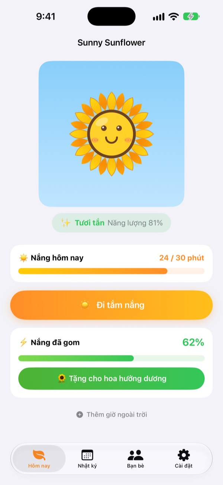
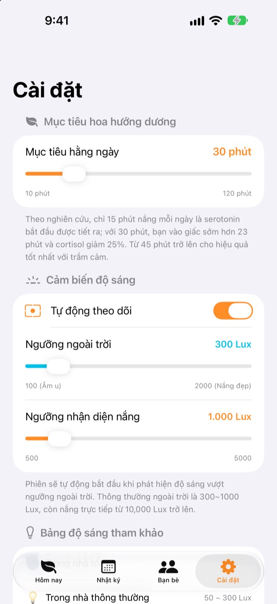
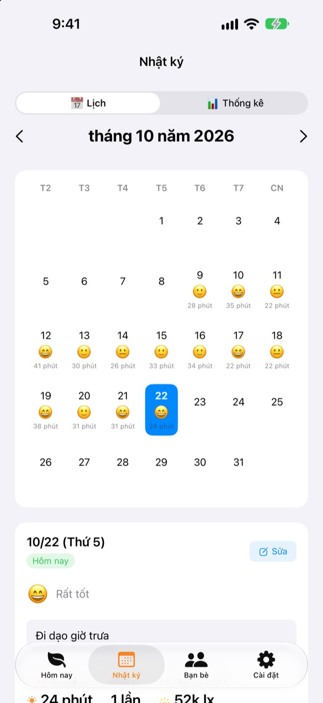
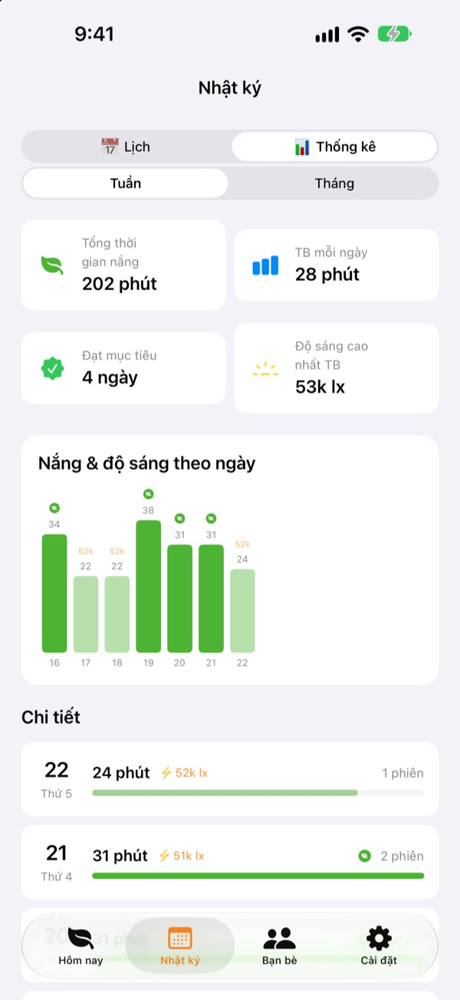

Nắng hôm nay
nuôi hoa hướng dương
Chỉ cần ra ngoài, thời gian tắm nắng tự cộng dồn. Tặng nắng đã gom cho hoa hướng dương để hoa tươi tắn. Quên vài ngày là hoa bắt đầu héo.
Mọi tính năng đều miễn phí. Dữ liệu chỉ lưu trên máy bạn.

Thử gom nắng
Chọn độ sáng và thời gian, tắm nắng rồi tặng cho bông hướng dương đang dần héo.
Hôm nay bạn đã tắm nắng được mấy phút?
Vài bước trên đường đi làm, chạy ra mua bữa trưa một chút. Ở trong nhà cả ngày, đến tối mới nhận ra mình gần như chẳng thấy ánh nắng. Sunny Sunflower cho bạn thấy thời gian ở ngoài trời bằng con số, và bông hướng dương đang chờ buổi dạo bộ ngày mai.
Ra ngoài là tự đo
Chạm Đi tắm nắng rồi ra ngoài. Ứng dụng ước tính độ sáng xung quanh từ thông tin phơi sáng của camera trước. Khi ánh sáng giữ ở mức ngoài trời khoảng 30 giây, việc ghi lại bắt đầu. Ứng dụng không bao giờ chụp hay lưu ảnh.
Sau đó cảm biến chỉ bật 20 giây mỗi 2 phút để tiết kiệm pin.

Ghi lại nắng và tâm trạng mỗi ngày
Trên lịch, mỗi ngày có thời gian tắm nắng, một biểu tượng cảm xúc và vài dòng ghi chú. Ở ngoài mà quên đo? Dùng Thêm giờ ngoài trời để thêm từ 5 đến 120 phút.

Nhìn cả tuần, cả tháng trong một lần
Thống kê theo tuần và theo tháng cho thấy những ngày bạn đạt mục tiêu và thời gian nắng trung bình. Đặt mục tiêu hằng ngày từ 10 đến 120 phút và xem ngay ở màn hình chính hôm nay còn thiếu bao nhiêu phút.
Tiện ích trên Màn hình chính, Màn hình khóa và Dynamic Island cũng cho thấy nắng hôm nay và tình trạng của hoa.

Bắt đầu với 3 bước
- 1
Đặt mục tiêu hằng ngày
Mặc định là 30 phút. Trong Cài đặt có thể chọn từ 10 đến 120.
- 2
Ra ngoài tắm nắng
Chạm
Đi tắm nắngvà mở ứng dụng khi ra ngoài. Quyền camera chỉ được hỏi một lần. - 3
Tặng cho hoa
Chạm
Tặng cho hoa hướng dươngđể biến nắng đã gom thành năng lượng.
Ánh sáng thành nắng như thế nào
- Dưới 300 lux
- Ánh sáng yếu: không tính là thời gian tắm nắng
- 300–1.000 lux
- Ngoài trời/Âm u: 1–3% mỗi 10 phút
- 1.000–10.000 lux
- Nắng: 3–33% mỗi 10 phút
- Từ 10.000 lux
- Nắng gắt: hơn 33% mỗi 10 phút
- Nắng đã gom
- số phút × độ sáng trung bình ÷ 3.000 (tối đa 100% mỗi lần)
- Năng lượng của hoa
- giảm 2,5% mỗi giờ, khoảng 60% mỗi ngày
Ngưỡng ngoài trời chỉnh được từ 100 đến 2.000 lux trong Cài đặt. Mặc định là 300 lux.
Câu hỏi thường gặp
Ứng dụng đo nắng thế nào?
Ứng dụng ước tính độ sáng xung quanh (độ rọi) từ thông tin phơi sáng của camera trước. Khi ánh sáng giữ ở mức ngoài trời một lúc, việc ghi lại tự bắt đầu. Không chụp, không lưu ảnh.
Đo có tốn pin không?
Khi đã xác nhận có nắng, cảm biến không bật liên tục mà chỉ bật khoảng 20 giây mỗi 2 phút để đo lại, thời gian còn lại chỉ dùng bộ đếm giờ.
Hoa của tôi cứ héo hoài.
Hoa mất 2,5% năng lượng mỗi giờ. Gom nắng rồi chạm Tặng cho hoa hướng dương. Vào ngày trời quang, 15–20 phút dưới nắng trực tiếp là đủ bù cho cả một ngày.
Tôi ở ngoài mà không được ghi lại.
Dùng Thêm giờ ngoài trời ở cuối màn hình chính để thêm từ 5 đến 120 phút. Nếu ngày âm u khó bắt đầu ghi, hãy hạ ngưỡng ngoài trời trong Cài đặt.
Tính năng bạn bè hoạt động ra sao?
Khi bạn và một người bạn ở gần nhau (trong khoảng 10 m) và cả hai đang đo nắng, hai máy tự kết nối. Với người mới gặp lần đầu, cần xác nhận cùng tắm nắng trước, sau đó sẽ tự động. Cánh hoa chuyển sang nhiều màu rồi trở lại màu cũ trong 3 ngày, và thời gian bên nhau được lưu ở tab Bạn bè. Cả hai cần cài ứng dụng và cho phép Bluetooth cùng mạng cục bộ.
Có thật là miễn phí không?
Có. Không quảng cáo, không mua hàng, dùng được mọi tính năng. Nếu thích, bạn có thể gửi tiền tip trong ứng dụng, nhưng tip không mở thêm gì.
Có sao lưu hay chuyển dữ liệu được không?
Mọi thứ nằm trên máy, không qua máy chủ, và giữ lại 90 ngày gần nhất. Không có tính năng xuất riêng, nhưng dữ liệu nằm trong bản sao lưu iPhone thông thường qua iCloud hoặc máy tính.
Làm sao xóa toàn bộ dữ liệu?
Trong cài đặt của ứng dụng, chạm Đặt lại dữ liệu, hoặc xóa ứng dụng. Thao tác này không hoàn tác được.
Báo lỗi ở đâu?
Gửi email đến địa chỉ bên dưới hoặc mở issue trên GitHub (github.com/M1zz/SunlightTracker/issues). Cho biết đời máy, phiên bản iOS và chuyện gì đã xảy ra sẽ giúp rất nhiều. Thường chúng tôi trả lời trong vài ngày.
Có câu hỏi hay góp ý? Gửi về leeo@kakao.com.